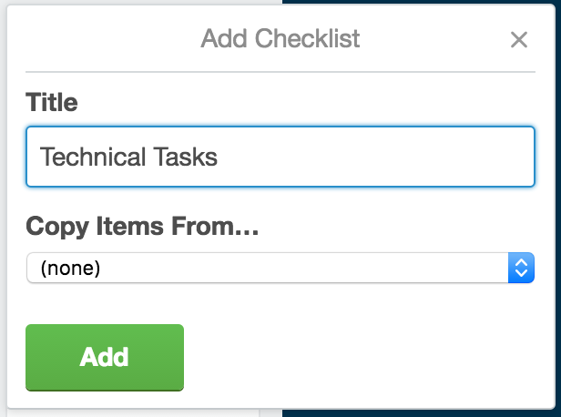

Sprint Planning
Purpose
This tutorial walks through Sprint Planning phase using Trello.
What is Sprint Planning
It is a meeting where the product owner talks about their highest priority user stories and developers ask questions to breakdown these users stories from the product backlog into more specific technical tasks. Theses specfic tasks become part of the sprint backlog.
Step-By-Step Instructions
Adding Technical Tasks
-
Reminder: Technical Tasks are specific code, design, test, etc, that fulfill an acceptance criteria.
- First move the user stories agreed upon for sprint to Current Sprint Backlog
- Click a user story to expand the user story card
- Under Add on the right-hand side click Checklist
- Enter the title as Technical Tasks 
- Add any related tasks needed to fulfill the acceptance criteria
Adding Story Points
-
Reminder: Story points is a measurement used to determine the amount of effort needed to implement a story and task. The measurement can be based on anything you can think of from time to complexity.
- Next need to play some planning-poker to determine the points for each task
- Add up your points per task and add the total point value to your stories by editing each user story
- You should now have points assigned to each user story for your sprint and the additional tasks needed to complete the Sprint.
Note: Planning-poker is a tool where a team reviews a user story and each member puts down a numeric value for the story. If the values are all different, then the team discusses why and replays the game until a concensous is made. https://www.mountaingoatsoftware.com/agile/planning-poker